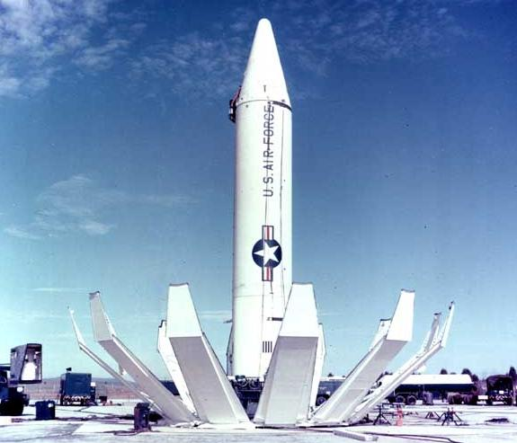

Kennedy denuncia rampas atómicas soviéticas en Cuba y ordena la cuarentena naval
En un mensaje televisado a la Nación, el presidente reveló que aviones de reconocimiento fotografiaron en la isla rampas de cohetes con capacidad nuclear. Anunció el cerco naval y exigió a Moscú el retiro de los proyectiles. Nadie recuerda una noche semejante desde el fin de la guerra.

A las siete de la tarde, con el rostro grave y la voz medida, el presidente Kennedy ocupó las pantallas de televisión de todo el país para pronunciar el mensaje más sombrío que se recuerde desde la guerra. Anunció que aviones de reconocimiento U-2 fotografiaron en Cuba, a escasas millas de las costas norteamericanas, rampas de cohetes soviéticos capaces de portar cargas atómicas y de alcanzar buena parte del hemisferio. En respuesta, ordenó una «cuarentena» naval alrededor de la isla: los buques de guerra interceptarán todo cargamento militar con destino a Cuba. Diecisiete minutos duró el discurso; hará falta mucho más para medir sus consecuencias.
El presidente exigió al primer ministro Khrushchev el desmantelamiento y retiro inmediato de los proyectiles, y advirtió que todo cohete lanzado desde Cuba contra cualquier nación del hemisferio será considerado un ataque de la Unión Soviética contra los Estados Unidos, que responderá con todo su poder. Washington convocó de urgencia al Consejo de Seguridad de las Naciones Unidas y a la Organización de Estados Americanos. Las fuerzas armadas fueron puestas en alerta: se informa que los bombarderos B-52 del Comando Aéreo Estratégico se mantienen en vuelo permanente, armados, relevándose en el aire para que nunca falte una escuadrilla lista sobre el cielo.
La crisis venía incubándose desde hace meses. Desde la revolución que llevó a Fidel Castro al poder, Cuba se aproximó a Moscú, y el desembarco fracasado de bahía de Cochinos, el año pasado, ahondó la ruptura con Washington. Durante el verano, los cargueros soviéticos multiplicaron sus viajes al Caribe; el Kremlin aseguraba que solo transportaban armas defensivas y técnicos. Las fotografías tomadas la semana pasada, que el gobierno examinó en secreto durante días, demostrarían lo contrario: obras de emplazamiento para cohetes de alcance medio, capaces de llegar a Washington en minutos. El engaño, dijo el presidente, es tan grave como la amenaza misma.
La ciudad escuchó el mensaje en un silencio de iglesia. En los bares de la capital, cuentan, los parroquianos dejaron enfriar el café frente a los televisores, y al terminar el discurso nadie aplaudió ni protestó: la gente salió a la calle a mirar el cielo, como si algo pudiera verse. En almacenes de varias ciudades se registraron compras nerviosas de conservas, velas y agua. Las centrales telefónicas quedaron congestionadas por llamadas de familias que se buscaban. Hay padres que preguntan en las escuelas por los refugios antiaéreos, y en las iglesias, abiertas a la noche, se improvisaron oraciones por la paz del mundo.
Este diario ha relatado guerras, pero jamás debió escribir bajo una amenaza como la de esta noche: por primera vez, la humanidad entera siente que la guerra atómica no es una hipótesis de manuales militares sino una cuestión de días, acaso de horas. Dos hombres, en Washington y en Moscú, tienen en sus manos la suerte de todos los demás. Los buques soviéticos navegan hacia la línea de cuarentena y nadie sabe qué ocurrirá cuando la alcancen. Solo cabe desear que la razón pese más que el orgullo, porque en la guerra que asoma no habría vencedores que pudieran contarla.